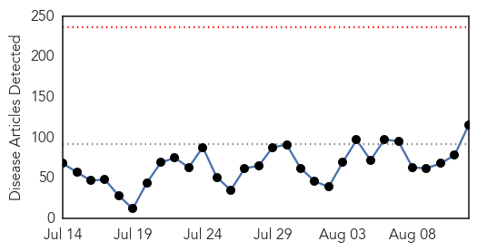
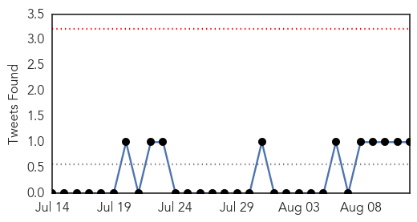
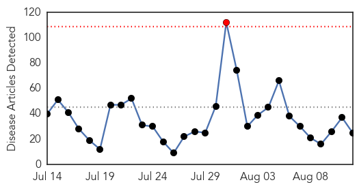
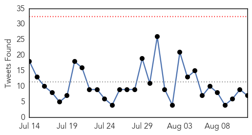
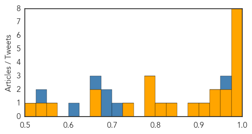

Unknown
30-Day Web Trend
0 alerts, 0 warnings

30-Day Twitter Trend
0 alerts, 0 warnings

Article Locations

Article Confidences

Top Articles:
- 0.996
- S. Korea to publish MERS white paper
- 0.987
- Lyme Disease in U.S. Is Under-Reported, CDC Says – WebMD
- 0.986
- With as many as 620 with Cyclospora in the US and Canada, what do you need to know?
- 0.985
- Feds say Lyme disease vastly underreported; local experts skeptical
- 0.984
- Lyme Disease in U.S. Is Under-Reported, CDC Says
- 0.964
- Typhoid outbreak in Borongan City now under control, DOH-8 says
- 0.962
- Ohio woman dies from complications of Legionnaires’ disease
- 0.954
- Cleveland hospital: Ohio woman dies of
- 0.942
- A Significant Outbreak of Legionnaire's Disease in New York City
- 0.936
- NY gov, mayor team up to fight Legionnaires’ as disease hits Rikers prison — RT USA
- 0.934
- Washington Pig Roast Salmonella Outbreak Expected to Rise
- 0.923
- Avian Flu Reported in Mexico
- 0.917
- Chicago Tribune
- 0.917
- Chicago Tribune
- 0.917
- Chicago Tribune
- 0.916
- Africa is Now On Track, One Year Polio Free
- 0.915
- How Legionnaires' Disease Got Its Name
- 0.912
- Albany County health official joins state talks on Legionnaires’ response
- 0.902
- Officials: NYC inmate diagnosed with Legionnaires' disease
- 0.893
- Why Somalia has not recorded any polio case this year against last year’s 198 cases
- 0.885
- S.Korea's president to visit White House in October
- 0.884
- Cleveland hospital: Ohio woman dies of Legionnaires’ disease
- 0.881
- S.Korea`s President Park Geun-hye to visit White House in October
- 0.871
- Health officials say salmonella outbreak in Washington linked to pork has grown to 134 cases
- 0.858
- A milestone has been reached for Africa- One year free of polio, says UNICEF
- 0.857
- Cyclospora infection reported in 29 states
- 0.855
- What you need to know about HPV
- 0.844
- Cleveland hospital: Ohio woman dies of Legionnaires’ disease
- 0.833
- Chagas disease in South Central Texas
- 0.831
- My chickenpox experience at 24
- 0.825
- 9 New Sites Test Positive For Legionnaires’ Bacteria « CBS New York
- 0.819
- Africa reaches one year without a single Polio case
- 0.814
- Lab tests show amoeba didn’t cause Alex swimmer’s death
- 0.796
- Africa Marks Polio-free Year
- 0.796
- Africa marks polio-free year
- 0.787
- Outbreak of Legionnaires Disease Highlights Exposure Risks due to Microbial Pathogens
- 0.786
- Rotavirus Vaccine Less Effective Abroad, Prompts Vaccine Center Research
- 0.786
- Trying to make sense of Riyadh's MERS outbreak
- 0.763
- Legionnaire’s bacteria found at pharmaceutical plant
- 0.763
- Signal filed over animals taken to village in N Bulgaria from brucellosis outbreak centre (ROUNDUP)
- 0.758
- Indiana E. coli Outbreak Possibly Linked to Day Care
- 0.753
- OSU study: Toxic algae growing threat to nation's water
- 0.752
- Africa celebrates one year without polio
- 0.751
- CDC: 495 in 30 States Now Have Cyclospora Infection, Possibly From Cilantro
- 0.750
- GSK Shuts U.S. Plant Due To Bacteria, No Supply Disruption Seen
- 0.748
- What Is Legionnaires' Disease And How Is it Affecting These Politicians' Idiot Rivalry?
- 0.747
- Legionnaires' disease cases on the rise in Illinois
- 0.746
- Health Ministry making efforts for reopening facilities in flood-hit areas - Myanmar
- 0.731
- Doctors' Strike: 3 die at 37 Military Hospital
- 0.721
- Statement on Floods in Myanmar [EN/MY] - Myanmar
Showing top 50 articles...
Top Tweets:
- 0.824
- .@WHO confirms Riyadh, Saudi Arabia has a hospital MERS outbreak in a report of 17 cases & 3 deaths. http://t.co/4bvtynFCwB
Ebola
30-Day Web Trend
1 alerts, 0 warnings

30-Day Twitter Trend
0 alerts, 0 warnings

Article Locations

Article Confidences
Top Articles:
- 1.000
- Ebola cases stay in single digits, but all pose high risks
- 0.999
- The most from the coast
- 0.998
- 'I survived Ebola but NINE of my family died so I want to stop others suffering'
- 0.997
- Spanish doctor optimistic over tests on new Ebola vaccine
- 0.997
- MSF warns ‘fatigue’ will derail efforts to win ebola fight « Awoko Newspaper
- 0.996
- Ebola Vaccine 100% Effective in Trials
- 0.994
- Ebola’s victims of the future: pregnant women
- 0.993
- Promising Ebola vaccine
- 0.970
- War on Ebola gets a shot in the arm as cooperation continues
- 0.963
- Style overshadows substance for de Blasio after Legionnaires' outbreak
- 0.945
- Beijing to maintain aid to Ebola-hit Guinea: China FM
- 0.935
- Mock drill: Leadership class explores how to cover an Ebola scare
- 0.907
- 10 of the most interesting infection control developments this year
- 0.879
- With new UN development goals, focus shifts away from infectious disease
- 0.830
- A milestone in Africa: One year without a case of polio
- 0.806
- Taiwan, U.S. kick off workshop on MERS for regional partners
- 0.794
- Taiwan, U.S. kick off MERS workshop for regional partners
- 0.782
- China pledges continued support for Ebola-hit nations
- 0.776
- United Nations Ebola Outbreak Update August 2015 – 41st Edition - Sierra Leone
- 0.750
- A Milestone in Africa: One Year Without a Case of Polio
- 0.667
- Frequent flyers in Birmingham address concerns about air travel
- 0.659
- ADRA Liberia donates US$1.2m medical equipment
- 0.555
- Africa celebrates a year without polio
- 0.532
- China, Africa to join hands in post-Ebola cooperation
- 0.504
- Cuomo and de Blasio Call Truce After Legionnaires’ Disease Spat
Top Tweets:
- 0.955
- Latest Ebola report: 3 cases - 2 in Guinea, 1 in Sierra Leone. Stats good but details concerning. Not known how Guinea cases caught it
- 0.942
- Attention, World: The Ebola Fight Isn't Over - TIME http://t.co/QM3x3hJwZY ebola EVD
- 0.920
- In US Ebola Response: Empty ETUs to Expend Over US$5M > Ganta - Front Page Africa http://t.co/gIONDd8e3H ebola EVD
- 0.913
- Kenya refuses refuge to chimps from Ebola-hit Liberia - Reuters http://t.co/PhxEBVl0U0 ebola EVD
- 0.904
- Ebola Epidemic's Legacy Of Fear And Corruption - Hartford Courant http://t.co/6uygSPfqqG ebola EVD
- 0.847
- The biggest infectious disease threat we face isn't Ebola – it's our short ... - The Conversation US http://t.co/2btqV9xBYB ebola EVD
- 0.816
- The end of Ebola may be in sight in Sierra Leone, with only 4 recorded cases http://t.co/A607ddL8BJ
- 0.742
- Shedding of Ebola Virus in an Asymptomatic PregnantWoman @NEJM http://t.co/sIOAvvJE4p
- 0.705
- KC company builds container to transport Ebola patients - KMBC Kansas City http://t.co/x4lzmStaWy ebola EVD
- 0.689
- Aujourd'hui nous vous faisons découvrir la magnifique chanson de Jean Charles Ngimbi "Ebola ça suffit": "Tu as... http://t.co/CNcPU85e0s
- 0.670
- How The Department of Defense Helped Confront Ebola - Georgetown Public Policy Review http://t.co/eSIb0kL7jq ebola EVD
- 0.648
- 12 Aug - news pouch on avianflu avianinfluenza Ebola EbolaResponse MERS is here: http://t.co/PdqcTaIDnM
- 0.624
- Spotlight: China, Africa to join hands in post-Ebola cooperation - Xinhua http://t.co/WS0ZLZhgd0 ebola EVD
- 0.517
- In US Ebola Response - Empty ETUs to Expend Over US$5 Million - http://t.co/NaiI6Jl8yj http://t.co/0MAsqvzjzy ebola EVD
- 0.504
- Attention, World: The Ebola Fight Isn't Over - TIME http://t.co/pYt9KRsO4a
- 0.502
- 'I survived Ebola but NINE of my family died so I want to stop others suffering' - http://t.co/L4gbwrglxU http://t.co/HgBjJ21PyJ ebola EVD